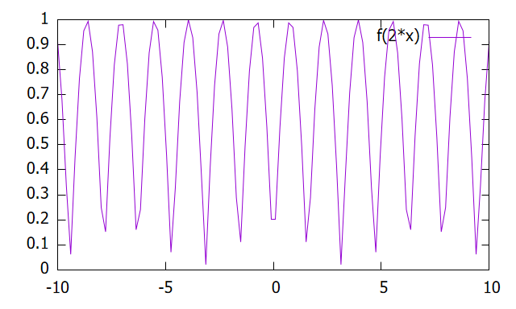
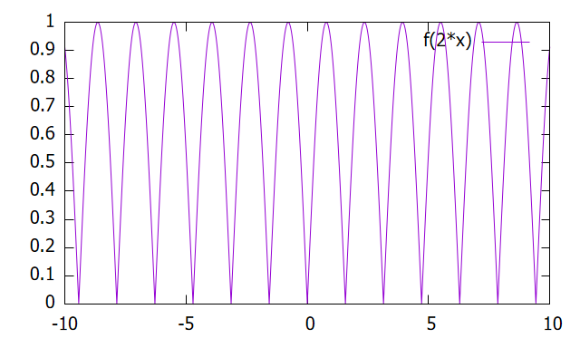

1-3. 関数グラフを書く
このセクションでは、\(y = f(x)\) 型の関数を表示する方法について紹介する。
変数・関数の定義
多くのプログラミング言語と同様、変数(または定数)や関数を定義することができる。例えば
e = 2.7text = "String"文字列の処理についてはこのセクションでは取り上げない。
関数を定義する際は、やはり関数名(引数)の形で宣言すればよい：
f(x) = x**2 + 3*xこれは関数 \(f(x) = x^2 + 3x\) を定義する命令である。Gnuplotで利用できる演算子は次のとおりである：
演算子一覧
| 分類 | 演算子 | 意味 | 例 |
|---|---|---|---|
| 算術 | + | 加算 | a + b |
| 算術 | - | 減算 | a - b |
| 算術 | * | 乗算 | a * b |
| 算術 | / | 除算 | a / b |
| 算術 | % | 剰余 | a % b |
| 算術 | ** | べき乗 | a ** b |
| 比較 | == | 等しい | a == b |
| 比較 | != | 等しくない | a != b |
| 比較 | < | 小なり | a < b |
| 比較 | <= | 以下 | a <= b |
| 比較 | > | 大なり | a > b |
| 比較 | >= | 以上 | a >= b |
| 論理 | && | 論理AND | (a > 0) && (b > 0) |
| 論理 | || | 論理OR | (a > 0) || (b > 0) |
| 論理 | ! | 否定 | !(a == b) |
| 条件 | ?: | 三項演算子 | (a > 0) ? a : -a |
| ビット | & | ビットAND | a & b |
| ビット | | | ビットOR | a | b |
| ビット | ^ | ビットXOR | a ^ b |
| ビット | ~ | ビット反転 | ~a |
| ビット | << | 左シフト | a << 1 |
| ビット | >> | 右シフト | a >> 1 |
Gnuplotではあらかじめ予約された名があり、これらを変数・関数名として用いることはできない。 次によく用いられる定数・文字および初等関数の一覧を示す：
予約名一覧
| 分類 | 名前 | 意味 | 例 |
|---|---|---|---|
| 文字 | x / y / z | 標準変数 | - |
| 定数 | pi | 円周率 | plot sin(pi*x) |
| 定数 | NaN | 非数（未定義） | 0/0 |
| 基本 | abs(x) | 絶対値 | abs(-3) |
| 基本 | sgn(x) | 符号 | sgn(-5) |
| 基本 | sqrt(x) | 平方根 | sqrt(4) |
| 三角 | sin(x) | 正弦 | sin(x) |
| 三角 | cos(x) | 余弦 | cos(x) |
| 三角 | tan(x) | 正接 | tan(x) |
| 三角 | asin(x) | 逆正弦 | asin(1) |
| 三角 | acos(x) | 逆余弦 | acos(0) |
| 三角 | atan(x) | 逆正接 | atan(1) |
| 指数 | exp(x) | 指数関数 | exp(1) |
| 対数 | log(x) | 自然対数 | log(10) |
| 対数 | log10(x) | 常用対数 | log10(100) |
| 双曲線 | sinh(x) | 双曲線正弦 | sinh(x) |
| 双曲線 | cosh(x) | 双曲線余弦 | cosh(x) |
| 双曲線 | tanh(x) | 双曲線正接 | tanh(x) |
| 丸め | floor(x) | 切り捨て | floor(2.7) |
| 丸め | ceil(x) | 切り上げ | ceil(2.3) |
| 丸め | int(x) | 整数化 | int(2.9) |
| その他 | rand(x) | 乱数 | rand(0) |
| その他 | column(n) | データ列参照 | column(2) |
これ以外の特殊関数については、Gnuplotの公式マニュアルを確認してほしい。
plotコマンド
Gnuplotで陽関数 \(y = f(x)\) の形を描画するために、plotコマンドを用いる。
plot funcf(x) = abs(sin(x))
plot f(2*x)
これをプロットしてみると分かるが、上の図のようになんだか形が粗い。実際にはGnuplotのグラフは曲線ではなく、一定間隔で \( (x,f(x)) \)を計算して折れ線グラフを描画している。点の生成数(サンプル数)が少ないとこのような 見た目になってしまう。これを解決するために
set samples {value}
このように滑らかなグラフを得られる。但し、サンプル数を大きくすると epsのようなベクター画像で保存する際ファイルサイズが大きくなることに注意。
- 変数や関数を多くのプログラミング言語と同様に定義できる。
- plotコマンドにより \(y = f(x)\) のグラフを描画できる。
- サンプル数を調整することで、滑らかなグラフを描画できる。